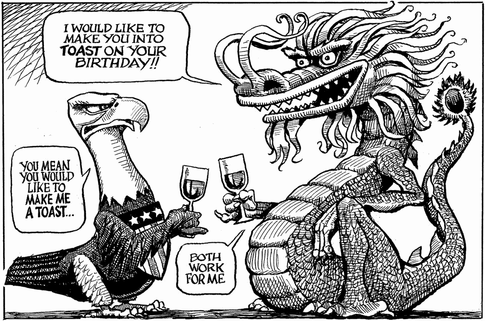

The world this week
Cartoon: A toast to America’s 250th birthday
A lighter take on the news
July 2nd 2026

Dig deeper into the subjects of this week’s cartoon:
America is anxious, and awesomely powerful
America is mighty—but becoming less dominant
Hope, backlash and the battle for America
America’s wrecking-ball revolution
What remains of the city upon the hill?
You can see previous ones here.